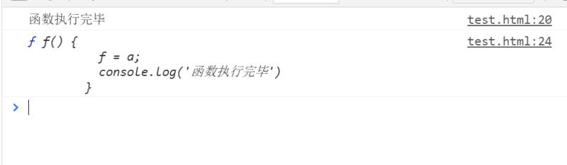

if语句内的函数声明问题
今天在学习群里看到一个伙伴的提问，但是由于其他大佬讨论别的问题，导致没有人回答他，所以我选择自己研究，查阅资料，然后给他解答，并祈愿自己以后在路上有困惑时也能够得到他人的解答，哈哈哈。
一、问题复现
先来看一眼他提出的问题：
第一段代码：
if (true) {
a = 3;
function a() {};
console.log(a)
};
console.log(a);
// 打印结果为
// 3
// 3
第二段代码：
if (true) {
function a() {};
a = 3;
console.log(a)
};
console.log(a);
// 打印结果为
// 3
// [Function: a]
乍一看没看到有什么特殊的，但是仔细想想，在第二段代码中，为什么a = 3了之后没有对a做任何修改，最后一个打印结果却是一个[Function: a]。
这让从业不久的我感觉到非常的奇怪，于时开启了我解题之路。
二、尝试解题
首先，我先对问题进行具象化（可能有很多人会觉得我这步很多余，但是我觉得还是确保一下比较好）：
if (true) {
a = 3;
function a() {};
console.log('if内的打印：', a)
};
console.log('if外的打印：', a);
// if内的打印： 3
// if外的打印： 3
if (true) {
function a() {};
a = 3;
console.log('if内的打印：', a)
};
console.log('if外的打印：', a);
// if内的打印： 3
// if外的打印： [Function: a]
从这里我得到结果，if语句外的打印不同
这时我又开始用我的老方法，查找这个a的值究竟是在变成了[Function: a]
console.log('最开始的打印', a);
if (true) {
console.log('进入if的打印', a);
function a() { };
console.log('声明函数的打印', a);
a = 3;
console.log('if内赋值的打印', a)
};
console.log('if外的打印', a);
// 最开始的打印 undefined
// 进入if的打印 [Function: a]
// 声明函数的打印 [Function: a]
// if内赋值的打印 3
// if外的打印 [Function: a]
console.log('最开始的打印', a);
if (true) {
console.log('进入if的打印', a);
a = 3;
console.log('if内赋值的打印', a)
function a() { };
console.log('声明函数的打印', a);
};
console.log('if外的打印', a);
// 最开始的打印 undefined
// 进入if的打印 [Function: a]
// if内赋值的打印 3
// 声明函数的打印 3
// if外的打印 3
在这里，我发现了两点端倪
第一点：
基于我自己对函数提升的理解，js在预解析的时候会对函数关键字声明的函数进行整个提升，而用var声明一个函数表达式，就只会提升这个变量名并赋undefined，就像下面这样
console.log(sayHi);
function sayHi() {
};
// [Function: sayHi]
console.log(sayNo);
var sayNo = function () {
}
// undefined
但是在前面我的代码中，声明函数的方式是关键字声明，可最开的是打印内容却是undefined，与var声明的函数表达式的特点一致。
第二点：
两个if语句内赋值语句紧跟的打印都是正常的赋值内容，但是if外的打印内容却好似不受if里的赋值语句影响，就好像if语句也有块级作用域一样，但无论是我之前学习的知识还是说现场去查阅的文章都告诉我：js只有全局作用域和函数作用域。
javascript 中分为全局作用域(Global context： window / global )和局部作用域（Local Scope , 又称为函数作用域Function context）。 简单讲作用域就是当前函数的 生成环境 或者 上下文 ，包含了当前函数内定义的变量以及对外层作用域的引用
也就是说if语句没有自己的作用域，这一顿剖析下来让我更是迷中迷。
第三点：
前两点没有给到我过多的帮助，反而让我更加困惑，那么我只能从第三点下手了，那就是：
if外的打印内容，始终与声明函数时的打印内容一致
难道说这个全局变量a是在声明函数的时候就已经确定了？
同时，在查阅MDN关于Function的文档时我也发现了一个有趣的地方（传送门）：
在MDN关于function文档中”有条件的创建函数“这一板块中写道
函数可以被有条件来声明，这意味着，函数声明可能出现在一个 if 语句里，但是，这种声明方式在不同的浏览器里可能有不同的效果。因此，不应该在生成环境代码中使用这种声明方式，应该使用函数表达式来代替。
原来官方都反对在if条件语句中使用关键字的方式来声明函数，从文档以及其他星星点点的知识中，我的思路渐渐开始清晰起来。
三、剖析原理
基于我前面的三点，我一步步来解析
3.1 函数提升的问题
首先，我原有的知识没有任何问题，当使用function关键字声明函数，预解析时函数会被提升，因此在真正的函数声明代码块前我们调用函数，也是可以实现。
但是，if条件语句有一个特点就是有条件，在if条件语句中使用function关键字声明，在预解析时不会对if条件进行判断，也就是说如果他对function函数声明进行了整个提升，就会导致当if条件不成立时，相当于明明函数没有声明，但是由于被提升，所以依然可以调用，这就产生了非常严重的Bug。
所以，在实际的js预解析中，if条件语句里使用关键字的函数声明，他的函数名会被提升，并赋undefined（就如同被转化为字面量声明函数一样）。
3.2 if条件的块级作用域假象
紧接3.1的末尾，函数名会提升并赋undefined的同时，整个函数声明会被提升到if条件语句的最上层，就像块级作用域中的函数提升特点一样。
而因为当if条件语句成立时，他需要符合关键字声明函数的整个提升的特点，所以当js读取到真正的function a(){};代码块时，会将此时的变量名为a的内容赋值到全局中的同名变量中。
而此后对于a的赋值操作，其实是对if语句中被提升到最上层的函数声明的a进行了赋值操作，其实没有影响全局变量a。
所以才会出现后面的赋值没有影响if外的最后一条打印结果。
那同时，我前面的第三点也有了答案，为什么if外的打印内容，始终与声明函数时的打印内容一致，其原因就是当遇到声明函数时，其提升到全局的a被赋值了，那毫无疑问他们当然相同。
光文字叭叭肯定不容易理解，我上几张图片
1.

2.

通过上面两张图片的对比，知识点便非常清晰啦。
四、举个栗子
好巧不巧，群里又有一个朋友发了一个相同的问题，我这里拿来进行复盘举例了。
他的代码块：

他的打印内容

他的问题：
为什么不是 undefined？
是执行函数后 f=a 了呀，a 在全局中声明，但没有赋值，为undefined，这时候又重新复制给了 f， 这样原来 f 是函数的，现在变成了 undefined,后面再 log,那不就是 undefined 吗
解答时间~
好，我们通过前面剖析的原理来看这个问题，当他在if(true)中用关键字声明了一个函数，在js预解析时，顶层的变量提升相当于
// 全局
var a = undefined;
var f = undefined;
在if语句中，function f(){...}被提升到了最上层，此时的变量f内其实时整个fuction。
而当js读取到真正的function f(){...}时，变量f内还是整个function，所以全局的变量f被赋值为整个function，所以他最后一条打印的内容为整个function，而不是undefined。
那么要怎么样才能让最后一条打印变成undefined呢？其实就是在读取到真正的function f(){...}之前，对变量f进行赋值就可以了，我们来对这个群友的代码进行简单修改：
var a;
if (true) {
f(); // 将调用函数拿到这里
function f() {
f = a;
console.log('函数执行完毕');
}
}
// f()
console.log(f);
感兴趣的朋友可以去打印试试，看看是不是undefined呢？
完结，散会~~